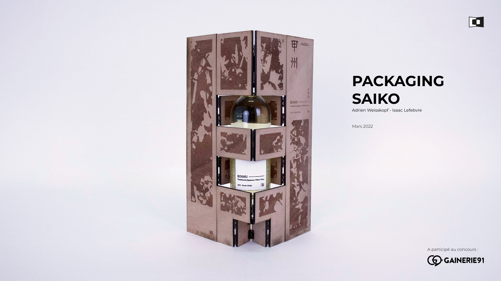
PACKAGING OF THE WINE BRAND : SAIKO
This a project for an competition named : Gainerie 91. We created a wine brand name Saiko and design it
bottle gift's packaging.
I hope you enjoy this project.
RESEARCH PHASE
The Mount Fuji, at his bottom the koshu growth
“Are they making wine in Japan ?” From this question we started working of this project and yes, they do
with Koshu, a certain type of grapes who growth at the bottom of the mount Fuji.
But weak local demand has never highlighted this know-how.
However, some grape varieties such as Koshu are at the origin of quality wines, with a lot of potential
according to some professionals like Benjamin Roffet, best Wine-waiter in France 2010.
It is decided, our goal would then be to make Koshu known outside the Japanese borders.
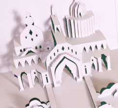
Kirigami examples
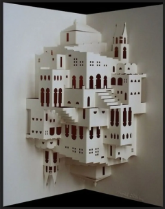
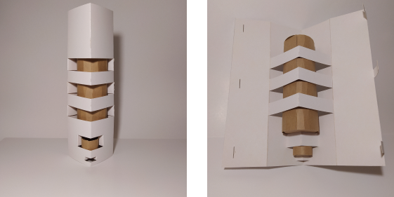
Experiments of kirigami for packaging
For the competition, we had to make a gift for VIP customers. So we used the art of Kirigami (The art of
folding and cutting paper).
We wanted to use only one sheet to limit the loss in materials.
TESTING PHASE
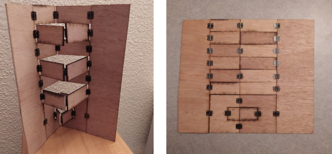
Experiments of kirigami for packaging on plywood
We used plywood to make wooden experiments because we wanted to re-use the planks from the wine
cases.
From this experimentation, we added an fold to put the bottle on it, because it was falling because of
the bottle weight.
And we laser engraved the grapes of koshu and the mount Fuji on the next experimentation.
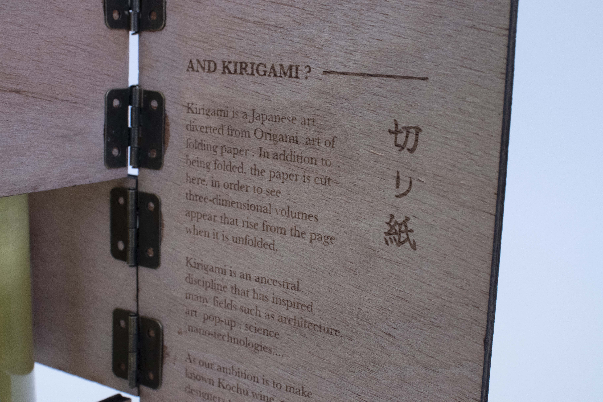
History of the Koshu
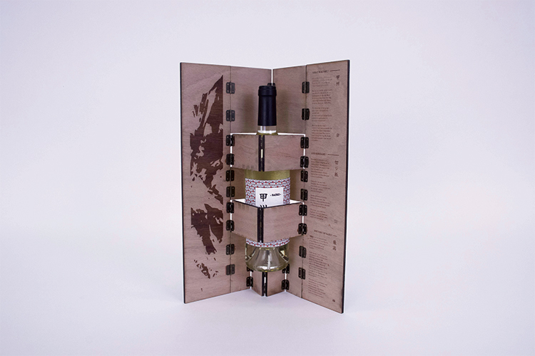
Final experimentation with the Japanese wine bottle
BRANDING
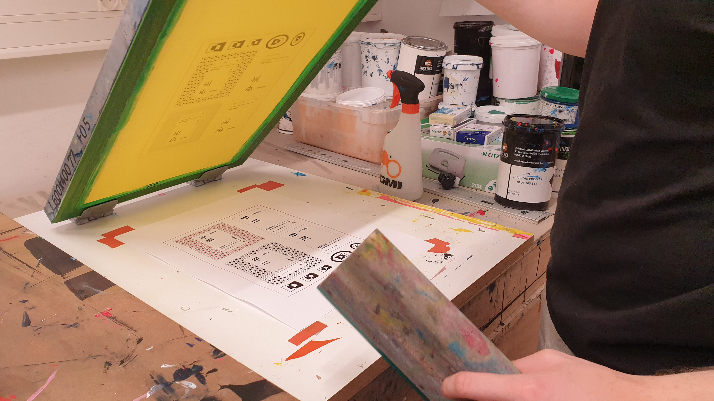
Serigraphy of the bottle labels
We created “Saiko”, a new brand for this project. Saiko means in japanese : “The best” perfect for the
luxury side of the brand.
The logo is a kirigami sheet in perspective.
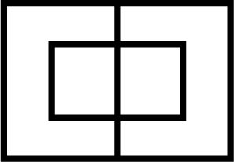
Logo of Saiko without perspective
Final logo of Saiko
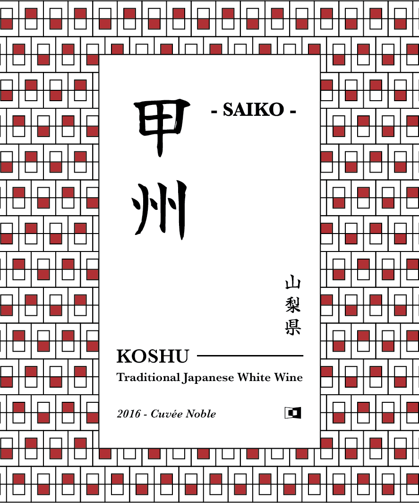
Label 01
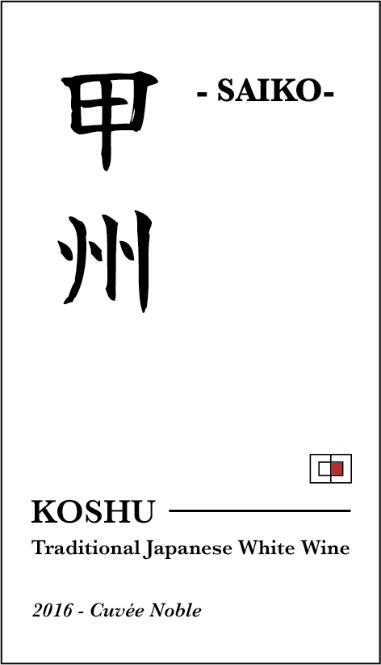
Label 02
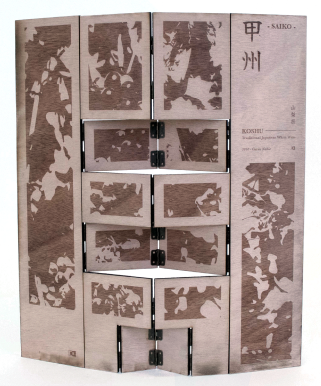
The design of this packaging is also inspired of Japanese screens.
So the customers will be able to display the engraved kirigami or use it to store other
bottles.
Saiko wants to revive the Koshu Japanese wine and share its story outside of Japan.